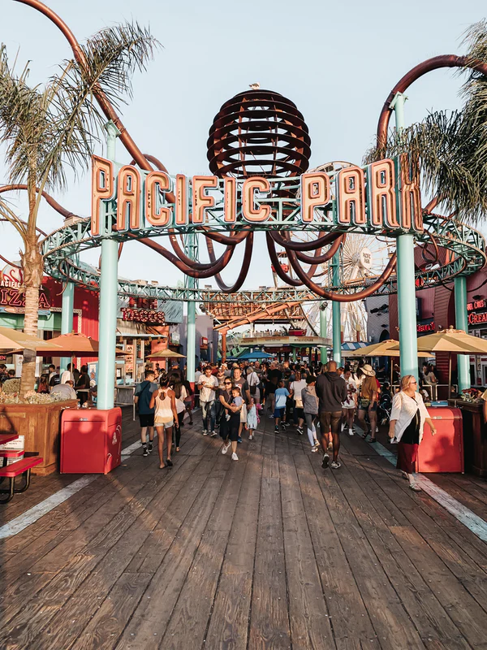

USHIMAKIランド
USHIMAKIの中でも最も人気なテーマパークUSHIMAKIランド
テーマパークの人気者USHIMAKIマウスはメディアでも引っ張りだこ！！
パーク制作費1000億円、制作期間2年とかなり大型パークである。
日本でUSHIMAKIパークに来たことのない人はいない
海外からの観光客や修学旅行生も多い

| USHIMAKIで楽しむ |
USHIMAKIの中でも最も人気なテーマパークUSHIMAKIランド
テーマパークの人気者USHIMAKIマウスはメディアでも引っ張りだこ！！
パーク制作費1000億円、制作期間2年とかなり大型パークである。
日本でUSHIMAKIパークに来たことのない人はいない
海外からの観光客や修学旅行生も多い
ここ新堀海ではきれいなサンゴ礁と魚たちが観察でき、 夏になると日光浴や釣りで楽しむ人が増えてきます。 中でもおすすめのアトラクションが二つあり、一つはスキューバダイビングです。きれいな景色を楽しみましょう！ 二つ目は潜水艦です。水深100ｍの世界で深海魚を観察できます！メガロドンがでるとの噂もあります！
観光地の多いUSHIMAKIではたくさんのHotelがあります。中でも最高級三ツ星ホテルUSHIMAKIホテルを紹介します！
60階建てのリゾートホテルでルームの種類は100以上存在します。スイートルームに泊まるには宿泊費90万円かかります。
ですが、部屋から見下ろすUSHIMAKの夜景は100億ドルの夜景に匹敵します！
ここUSHIMAKIには世界最大のUSHIMAKI水族館があります。
USHIMAKI水族館には1000種類以上の生物は存在していて、サメはもちろんのことクジラ、イルカがいます。
世界的に注目されている点は深海魚がたくさん生存しているところです。
深海は宇宙よりも解明されていることが少ないといわれており月に到着した人間は12人存在するのに対して
深海に到着できた人数はわずか3人です。ここUSHIMAKI水族館で深海の解明につながるかもしれません。
日本最大のお祭り雁道祭りが年に一度USHIMAKIで開催されます！
数多くの出店が並び、夕方から夜にかけて混雑が激しくなると予想されます。
このお祭りの最大の見どころは最終日にあがる打ち上げ花火です約1時間打ち上げられ多くの参加者を
毎年集めています。
| USHIMAKIで食べる |
世界中から最高の品質を取り揃えているUSHIMAKIレストランでは8つ星に登録されている。 またミシュランの賞を10年連続受賞しておりほっぺが落ちずに帰ったものはいまだいないといわれている。 世界中からの観光客が絶えず平日は1時間待ち、土日は常に8時間待ちとなっております。
今やjkに大人気！USHIMAKIタピオカ
1杯600円のタピオカミルクティーには1日に10000杯売れ、
常に3時間待ち100ｍ以上の行列ができています。
最近ではデリバリーもはじめて、深海マリアナ海溝、世界最大の山エベレスト、
地球の裏側ブラジルからも絶えず注文が届いています。
世界最大ハンバーガーチェーン店のマクドナルドが牛巻Open!
エジプトのピラミッドの裏側にマクドナルドがあるのと同じくらいの衝撃を与えるかもしれませんが
USHIMAKIにマクドナルドがOpenした20XX年にはマクドナルドの株価が大幅に上がり
多くの投資家から注目を集めました